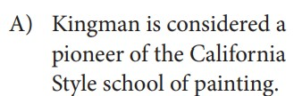
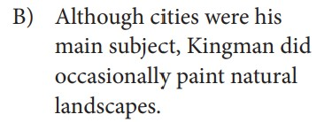
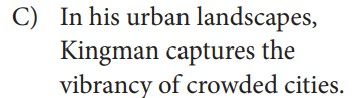
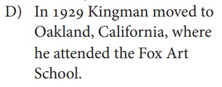
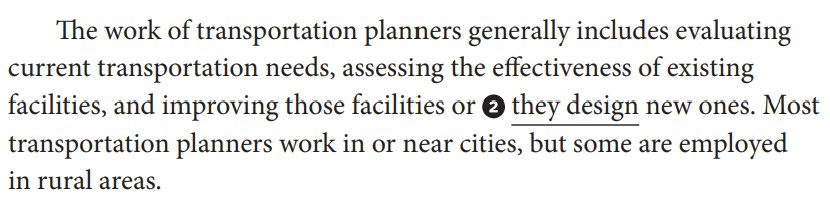
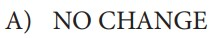
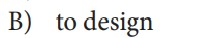
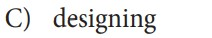
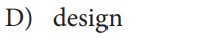

Writing Section questions are paired with a passage, like in the Reading Section. However, Writing questions progress along with the passage and ask you to make edits to it.
Most Writing Section questions fall into the below categories. Click on a category to learn more.
Expression of Ideas
Development
Proposition: revising claims, topic sentences, etc. in order to accurately convey arguments and ideas
Support: revising information and ideas intended to support claims
Focus: revising information and ideas as related to topic and purpose
Quantitative Information: relate numerical information in text
Organization
Logical Sequence: revise text to ensure information is presented in the most logical order
Introductions, Conclusions, and Transitions: revise text to improve beginning/ending and effectively use transition words and phrases
Effective Language Use
Precision: revise text to improve exactness of word choice
Concision: revise text to eliminate wordiness and redundancy
Style and Tone: revise text to ensure consistency or match to purpose
Syntax: use various sentence structures to accomplish rhetorical purposes
Standard English Conventions
Sentence Structure
Sentence Formation: editing text to ensure grammatically complete and standard sentences
Innapropriate Shifts in Construction: editing text to correct inappropriate shifts in verb tense, voice, mood, pronoun person, and number
Conventions of Usage
Pronouns: proper use of pronouns, including correcting unclear or amiguous antecedents
Possessive Determiners: recognize when words like "its" and "it's" are confused with each other
Agreement: ensure grammatical agreement between pronouns and antecedents, subjects and verbs, and nouns
Frequently Confused Words: recognize and correct instances in which words like accept/except have been confused with each other
Logical Comparison: recognize and correct comparison of unlike terms
Conventional Expression: recognize and correct writing inconsistent with standard English conventions
Conventions of Punctuation
End-of-sentence Punctuation
Within-sentence Punctuation: correct use of colons, semicolons, and dashes
Possessive Nouns and Pronouns
Items in a Series: correct use of commas and semicolons
Nonrestrictive and Parenthetical Elements: correct use of commas, parentheses, and dashes to set off sentence elements
Which choice most effectively establishes the main topic of the paragraph?
Source: SAT Test Specifications




Correct! This answer choice clearly establishes the main topic.
This is not the best choice because it is not clearly related to the topic of the paragraph.
[ X ]
Sentence Structure Question ↓

Choose the answer that most effectively improves the quality of writing in the passage or that makes the passage conform to the conventions of standard written English.
Source: SAT Test Specifications




Correct! Answer Choice C maintains parallelism with "evaluating," "assessing," and "improving."
This is not the best answer because it does not maintain parallelism with "evaluating," "assessing," and "improving."